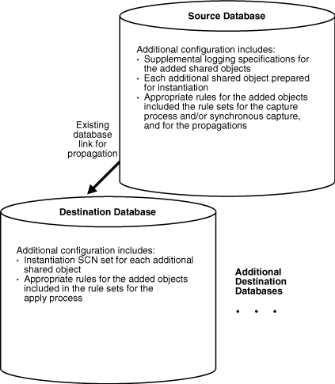
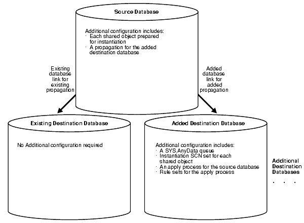
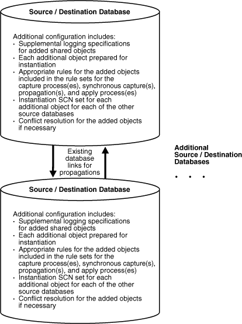
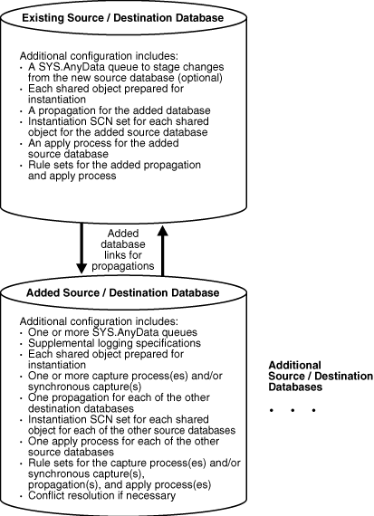

4 Adding to an Oracle Streams Replication Environment
This chapter contains instructions for adding database objects and databases to an existing Oracle Streams replication environment.
This chapter contains these topics:
Note:
Certain types of database objects are not supported by Oracle Streams. When you extend an Oracle Streams environment, ensure that no capture process attempts to capture changes to an unsupported database object. Also, ensure that no synchronous capture or apply process attempts to process changes to unsupported columns. To list unsupported database objects and unsupported columns, query the DBA_STREAMS_UNSUPPORTED and DBA_STREAMS_COLUMNS data dictionary views.
See Also:
-
Oracle Streams Concepts and Administration for instructions on determining which database objects are not supported by Oracle Streams
4.1 About Adding to an Oracle Streams Replication Environment
Sometimes it is necessary to extend an Oracle Streams replication environment when the needs of your organization change. You can extend an Oracle Streams replication environment by adding database objects or databases.
There are three ways to extend an Oracle Streams replication environment:
4.1.1 About Using the Setup Streams Replication Wizard or a Single Configuration Procedure
There are two easy ways to extend an Oracle Streams replication environment:
-
Run the Setup Streams Replication Wizard in Oracle Enterprise Manager Cloud Control
-
Run one of the following procedures in the
DBMS_STREAMS_ADMpackage:-
The
MAINTAIN_GLOBALprocedure can add a new database to an environment that replicates changes to all of the database objects in the databases. -
The
MAINTAIN_SCHEMASprocedure can add one or more new schemas to the existing databases in the replication environment, or it can add a new database that replicates schemas that are currently being replicated. -
The
MAINTAIN_SIMPLE_TTSprocedure can add a new simple tablespace to an existing replication environment, or it can add a new database that replicates a simple tablespace that is currently being replicated. -
The
MAINTAIN_TABLESprocedure can add one or more new tables to the existing databases in the replication environment, or it can add a new database that replicates tables that are currently being replicated. -
The
MAINTAIN_TTSprocedure can add a new set of tablespaces to an existing replication environment, or it can add a new database that replicates a set of tablespaces that are currently being replicated.
-
To use either of these methods to extend an Oracle Streams replication environment, the environment must meet the following conditions:
-
It must be a two-database or hub-and-spoke replication environment that was configured by the Setup Streams Replication Wizard or by one of the configuration procedures in the
DBMS_STREAMS_ADMpackage. See "Decide Which Type of Replication Environment to Configure" for information about these types of replication environments. -
It cannot use a synchronous capture at any database in the Oracle Streams replication environment. See Oracle Streams Concepts and Administration for more information about synchronous capture.
-
If you are adding a database to the environment, then each database that captures changes must use a local capture process. No database can use a downstream capture process. If you are adding one or more database objects to the environment, then the databases can use either local or downstream capture processes. See "Decide Whether to Configure Local or Downstream Capture for the Source Database" for more information about downstream capture.
-
If you are adding database objects to the replication environment, then the database objects must exist at the database specified in the
source_databaseparameter of the configuration procedure.
If your environment meets these conditions, then you can use the Setup Streams Replication Wizard or a single procedure to extend the environment.
The following are additional requirements for cases in which the replicated database objects already exist at an intended destination database before you run the wizard or procedure:
-
If you are adding database objects to the replication environment, and one or more of these database objects exist at a database other than the source database, then meet the following requirements:
-
Before running the wizard or procedure, ensure that the replicated database objects at each destination database are consistent with replicated database objects at the source database.
-
After running the wizard or procedure, ensure that the instantiation SCN is set for each replicated database object at each destination database. See "Setting Instantiation SCNs at a Destination Database" and "Monitoring Instantiation""Monitoring Instantiation".
-
-
If you are adding a database to the replication environment, then any of the database objects that are replicated in the current environment exist at the added database, then meet the following requirements:
-
Before running the wizard or procedure, ensure that the replicated database objects at each database being added are consistent with replicated database objects at the source database.
-
After running the wizard or procedure, ensure that the instantiation SCN is set for each replicated database object at the added database. See "Setting Instantiation SCNs at a Destination Database" and "Monitoring Instantiation""Monitoring Instantiation".
-
For instructions about adding to a replication environment using the wizard or a single procedure, see the following documentation:
-
The Oracle Enterprise Manager Cloud Control online help for instructions about using the Setup Streams Replication Wizard
-
"Adding Multiple Components Using a Single Procedure" for instructions about using a single procedure in the
DBMS_STREAMS_ADMpackage
See Also:
Oracle Database PL/SQL Packages and Types Reference for information about the procedures in the DBMS_STREAMS_ADM chapter
4.1.2 About Adding the Oracle Streams Components Individually in Multiple Steps
If you cannot extend the Oracle Streams replication environment by using the Setup Streams Replication Wizard or a configuration procedure in the DBMS_STREAMS_ADM package, then you must complete the configuration steps manually. These steps include adding the necessary rules and Oracle Streams components to the environment, and other configuration steps.
If you must extend the Oracle Streams replication environment manually, then see the instructions in "Adding Components Individually in Multiple Steps".
4.2 Adding Multiple Components Using a Single Procedure
This section describes adding Oracle Streams components a single PL/SQL procedure in the DBMS_STREAMS_ADM package. Oracle Streams components include queues, rules, rule sets, capture processes, synchronous captures, propagations, and apply processes.
This section contains these topics:
4.2.1 Adding Database Objects to a Replication Environment Using a Single Procedure
This topic includes an example that uses the MAINTAIN_TABLES procedure in the DBMS_STREAMS_ADM package to add tables to an existing hub-and-spoke replication environment. When the example is complete, the Oracle Streams replication environment replicates the changes made to the added tables at the databases in the environment.
Specifically, the example in this topic extends the replication environment configured in "Example That Configures Hub-and-Spoke Replication". That configuration has the following characteristics:
-
The
hrschema is replicated at thehub.example.com,spoke1.example.com, andspoke2.example.comdatabases. -
The
hub.example.comdatabase is the hub database in the hub-and-spoke environment, while the other databases are the spoke databases. -
The spoke databases allow changes to the replicated schema, and each database has a local capture process to capture these changes.
-
Update conflict handlers are configured for each replicated table at each database to resolve conflicts
This example adds the following tables to the environment:
-
oe.orders -
oe.order_items
This example uses the tables in the oe sample schema.
Note:
Before you use a configuration procedure in the DBMS_STREAMS_ADM package to extend an Oracle Streams replication environment, ensure that the environment meets the conditions described in "About Using the Setup Streams Replication Wizard or a Single Configuration Procedure".
Complete the following steps:
-
Ensure that the following directory objects exist, and remove any files related to the previous configuration from them, including Data Pump export dump files and export log files:
-
The
hub_dirdirectory object at thehub.example.comdatabase. -
The
spoke1_dirdirectory object at thespoke1.example.comdatabase. -
The
spoke2_dirdirectory object at thespoke2.example.comdatabase.
-
-
Stop the capture process at the hub database in the hub-and-spoke environment.
Use the
STOP_CAPTUREprocedure in theDBMS_CAPTURE_ADMpackage to stop a capture process.In this example, stop the capture process at the
hub.example.comdatabase. The replicated database objects can remain open to changes while the capture process is stopped. These changes will be captured when the capture process is restarted. -
In SQL*Plus, run the appropriate configuration procedure in the
DBMS_STREAMS_ADMpackage at the hub database to add each new database object for each spoke database.You might need to run the procedure several times if the environment has multiple spoke databases. In this example, complete the following steps:
-
Open SQL*Plus and connect to the
hub.example.comdatabase as the Oracle Streams administrator.See Oracle Database 2 Day DBA for more information about starting SQL*Plus.
-
Run the
MAINTAIN_TABLESprocedure to add theoe.ordersandoe.order_itemstables for replication betweenhub.example.comandspoke1.example.com:DECLARE tables DBMS_UTILITY.UNCL_ARRAY; BEGIN tables(1) := 'oe.orders'; tables(2) := 'oe.order_items'; DBMS_STREAMS_ADM.MAINTAIN_TABLES( table_names => tables, source_directory_object => 'hub_dir', destination_directory_object => 'spoke1_dir', source_database => 'hub.example.com', destination_database => 'spoke1.example.com', capture_name => 'capture_hns', capture_queue_table => 'source_hns_qt', capture_queue_name => 'source_hns', propagation_name => 'propagation_spoke1', apply_name => 'apply_spoke1', apply_queue_table => 'destination_spoke1_qt', apply_queue_name => 'destination_spoke1', bi_directional => TRUE); END; /The
MAINTAIN_TABLESprocedure can take some time to run because it is performing many configuration tasks. Do not allow data manipulation language (DML) or data definition language (DDL) changes to the specified tables at the destination database while the procedure is running. When the procedure completes, the new database objects are added to the environment, and the capture process that was stopped in Step 2 is restarted.When a configuration procedure is run, information about its progress is recorded in the following data dictionary views:
DBA_RECOVERABLE_SCRIPT,DBA_RECOVERABLE_SCRIPT_PARAMS,DBA_RECOVERABLE_SCRIPT_BLOCKS, andDBA_RECOVERABLE_SCRIPT_ERRORS. If the procedure stops because it encounters an error, then see Oracle Streams Replication Administrator's Guide for instructions about using theRECOVER_OPERATIONprocedure in theDBMS_STREAMS_ADMpackage to recover from these errors.The parameter values that specify Oracle Streams component names must be the same as the values specified in the configuration procedure in the
DBMS_STREAMS_ADMpackage that configured the replication environment. The Oracle Streams component names specified include the capture process name, queue names, queue table names, the propagation name, and the apply process name. In this example, the Oracle Streams component names match the ones specified in "Example That Configures Hub-and-Spoke Replication". -
Run the
MAINTAIN_TABLESprocedure to add theoe.ordersandoe.order_itemstables for replication betweenhub.example.comandspoke2.example.com:DECLARE tables DBMS_UTILITY.UNCL_ARRAY; BEGIN tables(1) := 'oe.orders'; tables(2) := 'oe.order_items'; DBMS_STREAMS_ADM.MAINTAIN_TABLES( table_names => tables, source_directory_object => 'hub_dir', destination_directory_object => 'spoke2_dir', source_database => 'hub.example.com', destination_database => 'spoke2.example.com', capture_name => 'capture_hns', capture_queue_table => 'source_hns_qt', capture_queue_name => 'source_hns', propagation_name => 'propagation_spoke2', apply_name => 'apply_spoke2', apply_queue_table => 'destination_spoke2_qt', apply_queue_name => 'destination_spoke2', bi_directional => TRUE); END; /
-
-
Set the instantiation SCN for the replicated tables at the spoke databases:
Note:
This step is required in this example because the replicated tables existed at the spoke databases before the
MAINTAIN_TABLESprocedure was run. If the replicated tables did not exist at the spoke databases before theMAINTAIN_TABLESprocedure was run, then the procedure sets the instantiation SCN for the replicated tables and this step is not required. Ensure that the data in the shared table is consistent at the source and destination databases when the instantiation SCN is set and that no changes are made to the table at the source database until after the SCN that is used for the instantiation SCN.-
In SQL*Plus, connect to the
hub.example.comdatabase as the Oracle Streams administrator.See Oracle Database Administrator's Guide for information about connecting to a database in SQL*Plus.
-
Set the instantiation SCN for the
oe.orderstable at thespoke1.example.comdatabase:DECLARE iscn NUMBER; -- Variable to hold instantiation SCN value BEGIN iscn := DBMS_FLASHBACK.GET_SYSTEM_CHANGE_NUMBER(); DBMS_APPLY_ADM.SET_TABLE_INSTANTIATION_SCN@spoke1.example.com( source_object_name => 'oe.orders', source_database_name => 'hub.example.com', instantiation_scn => iscn); END; / -
Set the instantiation SCN for the
oe.order_itemstable at thespoke1.example.comdatabase:DECLARE iscn NUMBER; -- Variable to hold instantiation SCN value BEGIN iscn := DBMS_FLASHBACK.GET_SYSTEM_CHANGE_NUMBER(); DBMS_APPLY_ADM.SET_TABLE_INSTANTIATION_SCN@spoke1.example.com( source_object_name => 'oe.order_items', source_database_name => 'hub.example.com', instantiation_scn => iscn); END; / -
Set the instantiation SCN for the
oe.orderstable at thespoke2.example.comdatabase:DECLARE iscn NUMBER; -- Variable to hold instantiation SCN value BEGIN iscn := DBMS_FLASHBACK.GET_SYSTEM_CHANGE_NUMBER(); DBMS_APPLY_ADM.SET_TABLE_INSTANTIATION_SCN@spoke2.example.com( source_object_name => 'oe.orders', source_database_name => 'hub.example.com', instantiation_scn => iscn); END; / -
Set the instantiation SCN for the
oe.order_itemstable at thespoke2.example.comdatabase:DECLARE iscn NUMBER; -- Variable to hold instantiation SCN value BEGIN iscn := DBMS_FLASHBACK.GET_SYSTEM_CHANGE_NUMBER(); DBMS_APPLY_ADM.SET_TABLE_INSTANTIATION_SCN@spoke2.example.com( source_object_name => 'oe.order_items', source_database_name => 'hub.example.com', instantiation_scn => iscn); END; /
-
-
Configure latest time conflict resolution for the
ordersandorder_itemstables in theoeschema at thehub.example.com,spoke1.example.com, andspoke2.example.comdatabases. See "Prebuilt Update Conflict Handlers" for instructions.
4.2.2 Adding a Database to a Replication Environment Using a Single Procedure
This topic includes an example that uses the MAINTAIN_SCHEMAS procedure in the DBMS_STREAMS_ADM package to add a new spoke database to an existing hub-and-spoke replication environment. When the example is complete, the Oracle Streams replication environment replicates the changes made to the schema with the new database.
Specifically, the example in this topic extends the replication environment configured in "Example That Configures Hub-and-Spoke Replication". That configuration has the following characteristics:
-
The
hrschema is replicated at thehub.example.com,spoke1.example.com, andspoke2.example.comdatabases. -
The
hub.example.comdatabase is the hub database in the hub-and-spoke environment, while the other databases are the spoke databases. -
The spoke databases allow changes to the replicated schema, and each database has a local capture process to capture these changes.
This example adds the spoke3.example.com database to the environment.
Note:
Before you use a configuration procedure in the DBMS_STREAMS_ADM package to extend an Oracle Streams replication environment, ensure that the environment meets the conditions described in "About Using the Setup Streams Replication Wizard or a Single Configuration Procedure".
Complete the following steps:
-
Complete the following tasks to prepare the environment for the new database:
-
Configure network connectivity so that the hub database can communicate with the new spoke database. In this example, configure network connectivity so that the
hub.example.comdatabase and thespoke3.example.comdatabases can communicate with each other.See Oracle Database 2 Day DBA for information about configuring network connectivity between databases.
-
Configure an Oracle Streams administrator at the new spoke database. In this example, configure an Oracle Streams administrator at the
spoke3.example.comdatabase. See "Configuring an Oracle Streams Administrator on All Databases" for instructions. This example assumes that the Oracle Streams administrator isstrmadmin. -
Create a database link from the hub database to new spoke database and from new spoke database to the hub database. In this example, create the following database links:
-
From the
hub.example.comdatabase to thespoke3.example.comdatabase. Both the name and the service name of the database link must bespoke3.example.com. -
From the
spoke3.example.comdatabase to thehub.example.comdatabase. Both the name and the service name of the database link must behub.example.com.
Each database link should be created in the Oracle Streams administrator's schema. Also, each database link should connect to the Oracle Streams administrator at the destination database. See "Configuring Network Connectivity and Database Links" for instructions.
-
-
Set initialization parameters properly at the new spoke database. In this example, set initialization parameters properly at the
spoke3.example.comdatabase. See "Setting Initialization Parameters Relevant to Oracle Streams" for instructions. -
Configure the new spoke database to run in
ARCHIVELOGmode. For a capture process to capture changes generated at a source database, the source database must be running inARCHIVELOGmode. In this example, configure thespoke3.example.comdatabase to run inARCHIVELOGmode. See Oracle Database Administrator's Guide for information about configuring a database to run inARCHIVELOGmode. -
Ensure that the
hub_dirdirectory objects exist at thehub.example.comdatabase, and remove any files related to the previous configuration from it, including Data Pump export dump files and export log files.
-
-
Open SQL*Plus and connect to the
spoke3.example.comdatabase as the Oracle Streams administrator.See Oracle Database 2 Day DBA for more information about starting SQL*Plus.
-
Create a directory object to hold files that will be generated by the
MAINTAIN_SCHEMASprocedure, including the Data Pump export dump file used for instantiation. The directory object can point to any accessible directory on the computer system. For example, the following statement creates a directory object namedspoke3_dirthat points to the /usr/spoke3_log_files directory:CREATE DIRECTORY spoke3_dir AS '/usr/spoke3_log_files';
-
Stop the capture process at the hub database in the hub-and-spoke environment.
Use the
STOP_CAPTUREprocedure in theDBMS_CAPTURE_ADMpackage to stop a capture process.In this example, stop the capture process at the
hub.example.comdatabase. The replicated database objects can remain open to changes while the capture process is stopped. These changes will be captured when the capture process is restarted. -
In SQL*Plus, run the appropriate configuration procedure in the
DBMS_STREAMS_ADMpackage at the hub database to add the new spoke database.In this example, complete the following steps:
-
Open SQL*Plus and connect to the
hub.example.comdatabase as the Oracle Streams administrator. -
Run the
MAINTAIN_SCHEMASprocedure to add thespoke3.example.comdatabase to the Oracle Streams replication environment:BEGIN DBMS_STREAMS_ADM.MAINTAIN_SCHEMAS( schema_names => 'hr', source_directory_object => 'hub_dir', destination_directory_object => 'spoke3_dir', source_database => 'hub.example.com', destination_database => 'spoke3.example.com', capture_name => 'capture_hns', capture_queue_table => 'source_hns_qt', capture_queue_name => 'source_hns', propagation_name => 'propagation_spoke3', apply_name => 'apply_spoke3', apply_queue_table => 'destination_spoke3_qt', apply_queue_name => 'destination_spoke3', bi_directional => TRUE); END; /The
MAINTAIN_SCHEMASprocedure can take some time to run because it is performing many configuration tasks. Do not allow data manipulation language (DML) or data definition language (DDL) changes to the database objects in the specified schema at the destination database while the procedure is running. When the procedure completes, the new database objects are added to the environment, and the capture process that was stopped in Step 4 is restarted.The parameter values specified in
capture_name,capture_queue_table, andcapture_queue_namemust be the same as the values specified in the configuration procedure in theDBMS_STREAMS_ADMpackage that configured the replication environment. In this example, these parameter values match the ones specified in "Example That Configures Hub-and-Spoke Replication".When a configuration procedure is run, information about its progress is recorded in the following data dictionary views:
DBA_RECOVERABLE_SCRIPT,DBA_RECOVERABLE_SCRIPT_PARAMS,DBA_RECOVERABLE_SCRIPT_BLOCKS, andDBA_RECOVERABLE_SCRIPT_ERRORS. If the procedure stops because it encounters an error, then see Oracle Streams Replication Administrator's Guide for instructions about using theRECOVER_OPERATIONprocedure in theDBMS_STREAMS_ADMpackage to recover from these errors.
-
-
Configure latest time conflict resolution for all of the tables in the
hrschema at thespoke3.example.comdatabase. This schema includes thecountries,departments,employees,jobs,job_history,locations, andregionstables. See "Prebuilt Update Conflict Handlers" for instructions.
4.3 Adding Components Individually in Multiple Steps
This section describes adding Oracle Streams components separately to extend a replication environment. Oracle Streams components include queues, rules, rule sets, capture processes, synchronous captures, propagations, and apply processes.
This section contains these topics:
-
Adding Replicated Objects to an Existing Single-Source Environment
-
Adding a New Destination Database to a Single-Source Environment
-
Adding Replicated Objects to an Existing Multiple-Source Environment
-
Adding a New Database to an Existing Multiple-Source Environment
Note:
-
When possible, it is usually easier to extend an Oracle Streams replication environment using either a single procedure or the Setup Streams Replication Wizard in Oracle Enterprise Manager Cloud Control. See "Adding Multiple Components Using a Single Procedure" for instructions about using a single procedure and the Oracle Enterprise Manager Cloud Control online help for instructions about using the wizard.
-
The instructions in the following sections assume you will use the
DBMS_STREAMS_ADMpackage to configure your Oracle Streams environment. If you use other packages, then extra steps might be necessary for each task.
4.3.1 Adding Replicated Objects to an Existing Single-Source Environment
You can add existing database objects to an existing single-source environment by adding the necessary rules to the appropriate capture processes, synchronous captures, propagations, and apply processes. Before creating or altering capture or propagation rules in a running Oracle Streams environment, ensure that any propagations or apply processes that will receive logical change records (LCRs) because of the new or altered rules are configured to handle these LCRs. That is, the propagations or apply processes should exist, and each one should be associated with rule sets that handle the LCRs appropriately. If these propagations and apply processes are not configured properly to handle these LCRs, then LCRs might be lost.
For example, suppose you want to add a table to an Oracle Streams replication environment that already captures, propagates, and applies changes to other tables. Assume that only one capture process or synchronous captures will capture changes to this table, and only one apply process will apply changes to this table. In this case, you must add one or more table rules to the following rule sets:
-
The positive rule set for the apply process that will apply changes to the table
-
The positive rule set for each propagation that will propagate changes to the table
-
The positive rule set for the capture process or synchronous capture that will capture changes to the table
If you perform administrative steps in the wrong order, you can lose LCRs. For example, if you add the rule to a capture process rule set first, without stopping the capture process, then the propagation will not propagate the changes if it does not have a rule that instructs it to do so, and the changes can be lost.
This example assumes that the replicated database objects are read-only at the destination databases. If the replicated database objects are read/write at the destination databases, then the replication environment will not stay synchronized because Oracle Streams is not configured to replicate the changes made to the replicated database objects at the destination databases.
Figure 4-1 shows the additional configuration steps that must be completed to add replicated database objects to a single-source Oracle Streams environment.
Figure 4-1 Example of Adding Replicated Objects to a Single-Source Environment
Description of "Figure 4-1 Example of Adding Replicated Objects to a Single-Source Environment"
To avoid losing LCRs, complete the configuration in the following order:
You must stop the capture process, disable one of the propagation jobs, or stop the apply process in Step 2 to ensure that the table or schema is instantiated before the first LCR resulting from the added rule(s) reaches the apply process. Otherwise, LCRs could be lost or could result in apply errors, depending on whether the apply process rule(s) have been added.
If you are certain that the added table is not being modified at the source database during this procedure, and that there are no LCRs for the table already in the stream or waiting to be captured, then you can perform Step 7 before Step 6 to reduce the amount of time that an Oracle Streams process or propagation job is stopped.
See Also:
Oracle Streams Extended Examples for a detailed example that adds objects to an existing single-source environment
4.3.2 Adding a New Destination Database to a Single-Source Environment
You can add a destination database to an existing single-source environment by creating one or more new apply processes at the new destination database and, if necessary, configuring one or more propagations to send changes to the new destination database. You might also need to add rules to existing propagations in the stream that send changes to the new destination database.
As in the example that describes "Adding Replicated Objects to an Existing Single-Source Environment", before creating or altering propagation rules in a running Oracle Streams replication environment, ensure that any propagations or apply processes that will receive logical change records (LCRs) because of the new or altered rules are configured to handle these LCRs. Otherwise, LCRs might be lost.
This example assumes that the replicated database objects are read-only at the destination databases. If the replicated database objects are read/write at the destination databases, then the replication environment will not stay synchronized because Oracle Streams is not configured to replicate the changes made to the replicated database objects at the destination databases.
Figure 4-2 shows the additional configuration steps that must be completed to add a destination database to a single-source Oracle Streams environment.
Figure 4-2 Example of Adding a Destination to a Single-Source Environment
Description of "Figure 4-2 Example of Adding a Destination to a Single-Source Environment"
To avoid losing LCRs, you should complete the configuration in the following order:
See Also:
Oracle Streams Extended Examples for detailed example that adds a database to an existing single-source environment
4.3.3 Adding Replicated Objects to an Existing Multiple-Source Environment
You can add existing database objects to an existing multiple-source environment by adding the necessary rules to the appropriate capture processes, synchronous captures, propagations, and apply processes.
This example uses the following terms:
-
Populated database: A database that already contains the replicated database objects being added to the multiple-source environment. You must have at least one populated database to add the objects to the environment.
-
Export database: A populated database on which you perform an export of the database objects you are adding to the environment. This export is used to instantiate the added database objects at the import databases. You might not have an export database if all of the databases in the environment are populated databases.
-
Import database: A database that does not contain the replicated database objects before they are added to the multiple-source environment. You instantiate the replicated database objects at an import database by performing an import of these database objects. You might not have any import databases if all of the databases in the environment are populated databases.
Before creating or altering capture or propagation rules in a running Oracle Streams replication environment, ensure that any propagations or apply processes that will receive logical change records (LCRs) because of the new or altered rules are configured to handle these LCRs. That is, the propagations or apply processes should exist, and each one should be associated with rule sets that handle the LCRs appropriately. If these propagations and apply processes are not configured properly to handle these LCRs, then LCRs can be lost.
For example, suppose you want to add a new table to an Oracle Streams replication environment that already captures, propagates, and applies changes to other tables. Assume multiple capture processes or synchronous captures in the environment will capture changes to this table, and multiple apply processes will apply changes to this table. In this case, you must add one or more table rules to the following rule sets:
-
The positive rule set for each apply process that will apply changes to the table
-
The positive rule set for each propagation that will propagate changes to the table
-
The positive rule set for each capture process or synchronous capture that will capture changes to the table
If you perform administrative steps in the wrong order, then you can lose LCRs. For example, if you add the rule to a capture process rule set first, without stopping the capture process, then the propagation will not propagate the changes if it does not have a rule that instructs it to do so, and the changes can be lost.
Figure 4-3 shows the additional configuration steps that must be completed to add replicated database objects to a multiple-source Oracle Streams environment.
Figure 4-3 Example of Adding Replicated Objects to a Multiple-Source Environment
Description of "Figure 4-3 Example of Adding Replicated Objects to a Multiple-Source Environment"
When there are multiple source databases in an Oracle Streams replication environment, change cycling is possible. Change cycling happens when a change is sent back to the database where it originated. Typically, you should avoid change cycling. Before you configure your replication environment, see Oracle Streams Tags, and ensure that you configure the replication environment to avoid change cycling.
To avoid losing LCRs, complete the configuration in the following order:
After completing these steps, complete the steps in each of the following sections that apply to your environment. You might need to complete the steps in only one of these sections or in both of these sections:
-
For each populated database, complete the steps in "Configuring Populated Databases When Adding Replicated Objects". These steps are required only if your environment has multiple populated databases.
-
For each import database, complete the steps in "Adding Replicated Objects to Import Databases in an Existing Environment".
4.3.3.1 Configuring Populated Databases When Adding Replicated Objects
After completing the steps in "Adding Replicated Objects to an Existing Multiple-Source Environment", complete the following steps for each populated database if your environment has multiple populated databases:
4.3.3.2 Adding Replicated Objects to Import Databases in an Existing Environment
After completing the steps in "Adding Replicated Objects to an Existing Multiple-Source Environment", complete the following steps for the import databases:
-
Pick the populated database that you will use as the export database. Do not perform the instantiations yet.
-
For each import database, set the instantiation SCNs for the added database objects at all of the other databases in the environment that will be a destination database of the import database. In this case, the import database will be the source database for these destination databases. The databases where you set the instantiation SCNs might be populated databases and other import databases.
-
If one or more schemas will be created at an import database during instantiation or by a subsequent replicated DDL change, then run the
SET_GLOBAL_INSTANTIATION_SCNprocedure in theDBMS_APPLY_ADMpackage for this import database at all of the other databases in the environment. -
If a schema exists at an import database, and one or more tables will be created in the schema during instantiation or by a subsequent replicated DDL change, then run the
SET_SCHEMA_INSTANTIATION_SCNprocedure in theDBMS_APPLY_ADMpackage for the schema for this import database at each of the other databases in the environment. Do this for each such schema.
See "Setting Instantiation SCNs Using the DBMS_APPLY_ADM Package" for instructions.
Because you run these procedures before any tables are instantiated at the import databases, and because the local capture processes or synchronous captures are configured already for these import databases, you will not need to run the
SET_TABLE_INSTANTIATION_SCNprocedure for each table created during instantiation. Instantiation SCNs will be set automatically for these tables at all of the other databases in the environment that will be destination databases of the import database. -
-
At the export database you chose in Step 1, perform an export of the replicated database objects. Next, perform an import of the replicated database objects at each import database. See Instantiation and Oracle Streams Replication and Oracle Database Utilities for information about using export/import.
Do not allow any changes to the database objects being exported while exporting these database objects at the source database. Do not allow changes to the database objects being imported while importing these database objects at the destination database.
You can specify a more stringent degree of consistency by using an export parameter such as
FLASHBACK_SCNorFLASHBACK_TIME. -
For each populated database, except for the export database, set the instantiation SCNs for the added database objects at each import database that will be a destination database of the populated source database. These instantiation SCNs must be set, and only the changes made at a populated database that are committed after the corresponding SCN for that database will be applied at an import database.
For each populated database, you can set these instantiation SCNs for the added objects in one of the following ways:
-
Perform a metadata only export of the added database objects at the populated database and import the metadata at each import database. Each import sets the required instantiation SCNs for the populated database at the import database. In this case, ensure that every added database object at the import database is consistent with the populated database at the time of the export.
If you are replicating DML changes only, then table level export/import is sufficient. If you are replicating DDL changes also, then additional considerations apply. See "Setting Instantiation SCNs Using Export/Import" for more information about performing a metadata export/import.
-
Set the instantiation SCNs manually for the added objects at each import database. Ensure that every added object at each import database is consistent with the populated database as of the corresponding instantiation SCN. See "Setting Instantiation SCNs Using the DBMS_APPLY_ADM Package" for instructions.
-
4.3.3.3 Finish Adding Objects to a Multiple-Source Environment Configuration
Before completing the configuration, you should have completed the following tasks:
-
"Adding Replicated Objects to an Existing Multiple-Source Environment"
-
"Configuring Populated Databases When Adding Replicated Objects", if your environment has multiple populated databases
-
"Adding Replicated Objects to Import Databases in an Existing Environment", if your environment had import databases
When all of the previous configuration steps are finished, complete the following steps:
4.3.4 Adding a New Database to an Existing Multiple-Source Environment
Figure 4-4 shows the additional configuration steps that must be completed to add a source/destination database to a multiple-source Oracle Streams environment.
Figure 4-4 Example of Adding a Database to a Multiple-Source Environment
Description of "Figure 4-4 Example of Adding a Database to a Multiple-Source Environment"
When there are multiple source databases in an Oracle Streams replication environment, change cycling is possible. Change cycling happens when a change is sent back to the database where it originated. Typically, you should avoid change cycling. Before you configure your replication environment, see Oracle Streams Tags, and ensure that you configure the replication environment to avoid change cycling.
Complete the following steps to add a new source/destination database to an existing multiple-source Oracle Streams replication environment:
Note:
Ensure that no changes are made to the database objects being replicated at the database you are adding to the Oracle Streams replication environment until the instantiation at the database is complete.
After completing these steps, complete the steps in the appropriate section:
-
If the objects that are to be replicated with the new database already exist at the new database, then complete the steps in "Configuring Databases If the Replicated Objects Already Exist at the New Database".
-
If the objects that are to be replicated with the new database do not already exist at the new database, complete the steps in "Adding Replicated Objects to a New Database".
4.3.4.1 Configuring Databases If the Replicated Objects Already Exist at the New Database
After completing the steps in "Adding a New Database to an Existing Multiple-Source Environment", complete the following steps if the objects that are to be replicated with the new database already exist at the new database:
4.3.4.2 Adding Replicated Objects to a New Database
After completing the steps in "Adding a New Database to an Existing Multiple-Source Environment", complete the following steps if the database objects that are to be shared with the new database do not already exist at the new database:
-
If the new database is a source database for other databases, then, at each destination database of the new source database, set the instantiation SCNs for the new database.
-
If one or more schemas will be created at the new database during instantiation or by a subsequent replicated DDL change, then run the
SET_GLOBAL_INSTANTIATION_SCNprocedure in theDBMS_APPLY_ADMpackage for the new database at each destination database of the new database. -
If a schema exists at the new database, and one or more tables will be created in the schema during instantiation or by a subsequent replicated DDL change, then run the
SET_SCHEMA_INSTANTIATION_SCNprocedure in theDBMS_APPLY_ADMpackage for the schema at each destination database of the new database. Do this for each such schema.
See "Setting Instantiation SCNs Using the DBMS_APPLY_ADM Package" for instructions.
Because you run these procedures before any tables are instantiated at the new database, and because the local capture process or synchronous capture is configured already at the new database, you will not need to run the
SET_TABLE_INSTANTIATION_SCNprocedure for each table created during instantiation. Instantiation SCNs will be set automatically for these tables at all of the other databases in the environment that will be destination databases of the new database.If the new database will not be a source database, then do not complete this step, and continue with the next step.
-
-
Pick one source database from which to instantiate the replicated database objects at the new database using export/import. First, perform an export of the replicated database objects. Next, perform an import of the replicated database objects at the new database. See Instantiation and Oracle Streams Replication and Oracle Database Utilities for information about using export/import.
Do not allow any changes to the database objects being exported while exporting these database objects at the source database. Do not allow changes to the database objects being imported while importing these database objects at the destination database.
You can specify a more stringent degree of consistency by using an export parameter such as
FLASHBACK_SCNorFLASHBACK_TIME. -
For each source database of the new database, except for the source database that performed the export for instantiation in Step 2, set the instantiation SCNs at the new database. These instantiation SCNs must be set, and only the changes made at a source database that are committed after the corresponding SCN for that database will be applied at the new database.
For each source database, you can set these instantiation SCNs in one of the following ways:
-
Perform a metadata only export at the source database and import the metadata at the new database. The import sets the required instantiation SCNs for the source database at the new database. In this case, ensure that the replicated database objects at the new database are consistent with the source database at the time of the export.
If you are replicating DML changes only, then table level export/import is sufficient. If you are replicating DDL changes also, then additional considerations apply. See "Setting Instantiation SCNs Using Export/Import" for more information about performing a metadata export/import.
-
Set the instantiation SCNs manually at the new database for the replicated database objects. Ensure that the replicated database objects at the new database are consistent with the source database as of the corresponding instantiation SCN. See "Setting Instantiation SCNs Using the DBMS_APPLY_ADM Package" for instructions.
-
-
At the new database, configure conflict resolution if conflicts are possible. See Oracle Streams Conflict Resolution for instructions.
-
Start the apply processes that you created in Step 3 at the new database using the
START_APPLYprocedure in theDBMS_APPLY_ADMpackage. -
Start the apply processes that you created in Step 4 at each of the other destination databases. If the new database is not a source database, then do not complete this step.